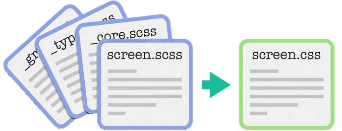
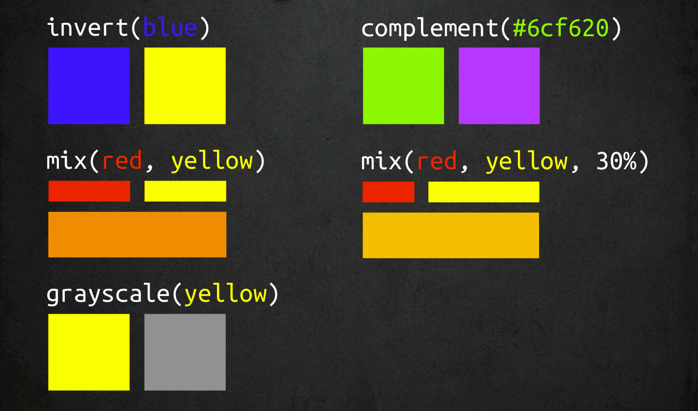
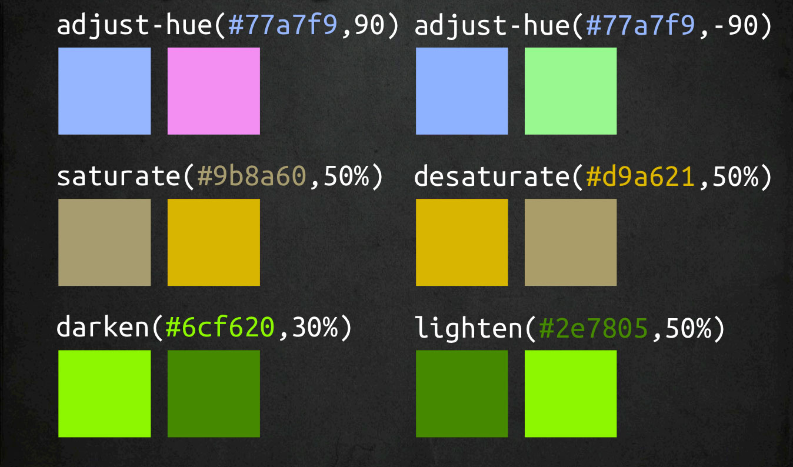

Qu’est-ce qu’un préprocesseur CSS?
C’est un outil permettant de transformer un langage (avec une syntaxe semblable à CSS), en CSS valide. La syntaxe du langage est souvent tellement proche de celle du CSS qu’on voit à peine la différence. Les préprocesseurs apportent une aide à l’écriture de vos feuilles de styles. Aujourd’hui, les deux préprocesseurs les plus utilisés sont Sass et Less.
Les préprocesseurs les plus utilisés
SASS
Foundation (framework)
Compass (framework)
LESS
Twitter Bootstrap (framework)
Stylus
Nib (framework)
Importation (@import)
Éviter la règle CSS “@import’’
Le “@import” des fichiers .scss se produit lors de la compilation au lieu du coté client.
Importation (@import) suite
/* import sans le "_" */
@import "le_fichier_importe";
/* import avec le "_" */
@import "_le_fichier_importe";

Importation (@import) suite
différence entre les deux façons d'importer
importer un fichier sans le "_" indique que ce fichier doit être généré en .css
importer un fichier avec le "_" indique que ce fichier doit être importé dans le fichier compilé
Importation (@import) suite
@import dans un sélecteur
.maclass {
@import "_le_fichier_importe";
}
Indentation
Indentation des selecteurs
Les selecteurs CSS peuvent être indentés.
Indentation des propriétés
Certaines propriétés avec le même nom peuvent être indentées
Le selecteur parent
L’utilisation du symbole “&” fait référence au parent.
Indentation (suite)
Indentation des sélecteurs
.ma-classe-parent {
.ma-classe-enfant {
strong {
color: black;
}
}
}
/* CSS GÉNÉRÉ */
.ma-class-parent .ma-class-enfant strong { color: black; }
* Ne pas dépasser 3 niveaux d'indentation
Indentation (suite)
indentation des propriétés
.ma-class-parent {
font:{
size: 12px;
weight: 700;
style: italic;
}
background:{
position: top left;
repeat: no-repeat;
color: #ccc;
}
}
/* CSS GÉNÉRÉ */
.ma-class-parent {
font-size: 12px;
font-weight: 700;
font-style: italic;
background-position: top left;
background-repeat: no-repeat;
background-color: #ccc;
}
Indentation (suite)
sélecteur parent ( & )
.ma-class-parent {
.ma-classe-enfant {
.touch & {
color: black;
}
}
}
/* CSS GÉNÉRÉ */
.touch .ma-class-parent .ma-class-enfant { color: black; }
* .touch est une fonctionnalité de Modernizr
Variables
La façon la plus simple d’utiliser SASS est l’utilisation des variables.
Les variables commencent avec le signe “$” et sont déclarés comme des propriétés.
“$nom : valeur”
Les utilisations les plus fréquentes sont les chiffres, les couleurs et les fonts.
variables (suite)
$primary: #1abc9c; /* turquoise */
$secondary: #8E44AD; /* emerald */
$tertiary: #3498db; /* peter river /*
$hover: $secondary;
$family: 'Open sans', serif;
$margin: 10px 20px;
@mixins
Définition
Les mixins servent à définir des styles qui sont utilisés à plusieurs endroits. Les mixins acceptent aussi des arguments, ce qui permet de produire une plus grande variété de styles.
Nous utilisons “@mixin” pour définir une mixin.
Utilisation
Nous utilisons “@include” pour inclure tous les styles retournés par la mixin.
@mixins (suite)
@mixin circle($circle-size, $color) {
width: $circle-size;
height: $circle-size;
background: $color;
@include border-radius($circle-size/2);
}
@include
/* APPELÉ LE MIXIN */
.circle {
@include circle(200px, red);
}
/* CSS GÉNÉRÉ */
.circle {
width: 200px;
height: 200px;
background: red;
-webkit-border-radius: 100px;
-moz-border-radius: 100px;
-ms-border-radius: 100px;
-o-border-radius: 100px;
border-radius: 100px;
}
@extend
Nous voulons souvent utiliser les même styles mais avec une légère différence. La façon la plus fréquente est d’utiliser une classe plus spécifique.
Avec SASS, la maintenance est beaucoup plus facile et cela permet d’éviter certaines erreurs.
Nous utilisons “@extend .classe” pour réutiliser les styles d’un selecteur sans avoir à tout dupliquer.
Different use cases@extend (suite)
extend %placeholder
%border-bottom {
padding: 0 0 30px 0;
border-bottom: 2px blue solid;
}
.ma-classe {
@extend %border-bottom;
}
.mon-autre-classe {
@extend %border-bottom;
}
/* CSS GÉNÉRÉ */
.ma-classe, .mon-autre-classe {
padding: 0 0 30px 0;
border-bottom: 2px blue solid
}
* le placeholder n'est pas compilé dans le .css final
Mathématiques
Sass supporte les operateurs standard
+ - * / %
Plusieurs fonctions sont disponibles.
percentage, round, ceil, floor, abs, min, max et plusieurs autres.
Mathématiques (suite)
Les opérations mathématique (+, -, *, /, %)
1em + 1em; /* 2em */
1em - 1em; /* 0em */
1in + 72pt; /* 2in */
6px * 4; /* 24px /*
18 % 5; /* 3 */
Couleurs
Il est possible de faire des calculs avec les couleurs.
Les opérations sont appliquées sur le canal rouge, vert et bleu.
Plusieurs fonctions sont disponibles dans SASS
rgb, rgba, red, green, blue, mix, hue, saturation, lightness, lighten, darken, saturate, desaturate, greyscale, complement, invert, alpha, rgba et plusieurs autres.
couleurs (suite)
lighten, darken, rgba
.lighten {
background: lighten($primary, 10);
}
.darken {
background: darken($primary, 10);
}
.rgba {
background: rgba($primary, 10);
}
couleurs (suite)
couleurs (suite)
Directives
@import
@media
L’utilisation du “@media” est la même qu’en CSS sauf à l’exception qu’elle peut être imbriqué dans les selecteurs.
@extend
@if
Permet d’utiliser des “@if, @else if, @else” dans toutes les directives.
Directives (suite)
@for
La déclaration du “@for” compile des styles de manière répétitive avec un compteur pour chaque itération.
@each
Le “@each” compile des styles pour chaque valeurs dans un tableau
@while
Le “@while” compile des styles jusqu’à ce que l’évalution soit “false”
@mixin
directives (suite)
@if, @else
$var: false;
@if $var == true {
&:before {
color: $secondary;
content: "$var == true, ce contenu s'affiche";
}
}@else {
&:before {
color: $tertiary;
content: "$var == false, ce contenu s'affiche";
}
}
directives (suite)
@for
@for $i from 0 through 6 {
.for-#{$i} {
height : $i * 20#{px};
}
}
Compass
Compass est un framework pour SASS. Il contient une multitude de Mixins et d’outils pour nous aider à être plus rapide dans notre développement.
CSS3
Les mixins pour le CSS3 sont habituellement utilisés pour éviter d’écrire tous les préfixes des fureteurs. Ils sont aussi utiles pour fournir une solution alternative pour les plus vieux fureteurs.
Opacity, box-shadow, animations, font-face et plusieurs autres.
Helpers
Les helpers servent à améliorer les fonctions de SASS.
adjust-lightness, font-files, image-width, image-height, prefix, inline-image et plusieurs autres.
Typography
Mixins qui permettent de styler plus rapidement certains éléments typographiques.
Link effects, lists, texts
Utilities
Les utilities sont des mixins pour gagner du temps et aider à la maintenance du projet.
Sprites, clearfix, resets, browser support etc
Extensions
- Susy
- h5bp
- rgba-png
- ceaser
- animate.sass
- etc ...